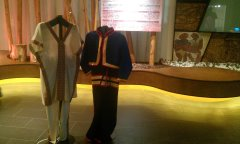

日月潭風景區管理處的向山遊客中心，為日月潭畔的新景點，也是遊客必到景點之一。該建築物由日本建築師團紀彥所設計，整體設計以融入原有地景為中心思想，斜坡式草皮可直通屋頂，以多種弧形從地面拉出所有空間，尋求與大自然的和諧，最特別的就是靠近日月潭的水池以無邊緣的設計讓池面與潭面融為一體。

「自然人文館」以影音互動式導覽遊客認識日月潭的文歷史和自然景觀。房廳的中間是日月潭的立體地圖，可以一眼看清日月潭面目，也很有意思。週圍的展示則是著重在日月潭的自然景觀、歷史，與原住民的文化采風錄。
「日昇月恆藝廊」以潭區附近工藝名家作品展為主題，大約每隔半年會更換展品，覽出作品非常精緻。也因為展出規模不大，和一般特展或大展有所區隔，對一般遊客來說，不會有太大的壓力，能自在地親臨一場藝文洗禮。
多媒體影音播放室有3D立體多媒體簡介，帶給遊客意想不到的影音震撼。多媒體影音播放時間，3D：10:00、14:00；HD：10:30、14:30。進去看影片介紹會對日月潭更瞭解哦，節目有：1.幻色水沙連（是3D的，館方會給你一副3D眼鏡）；2.絕色水沙連（是藍光畫質的影片）。
遊客中心提供遊客各項服務，展場包含「悠遊水沙連-產業館」，網羅了大日月潭地區的陶藝、紙藝、工藝、酒類、紅茶及農特產等特色產業，並提供產業資訊。日月潭週遭地區的農特產、工藝品，都已經被有系統地整體設計與行銷，像小米酒即使你不喝，光是瓶身、酒名與專屬圖騰或公仔圖案，很多人沖著造型而帶回家蒐藏。